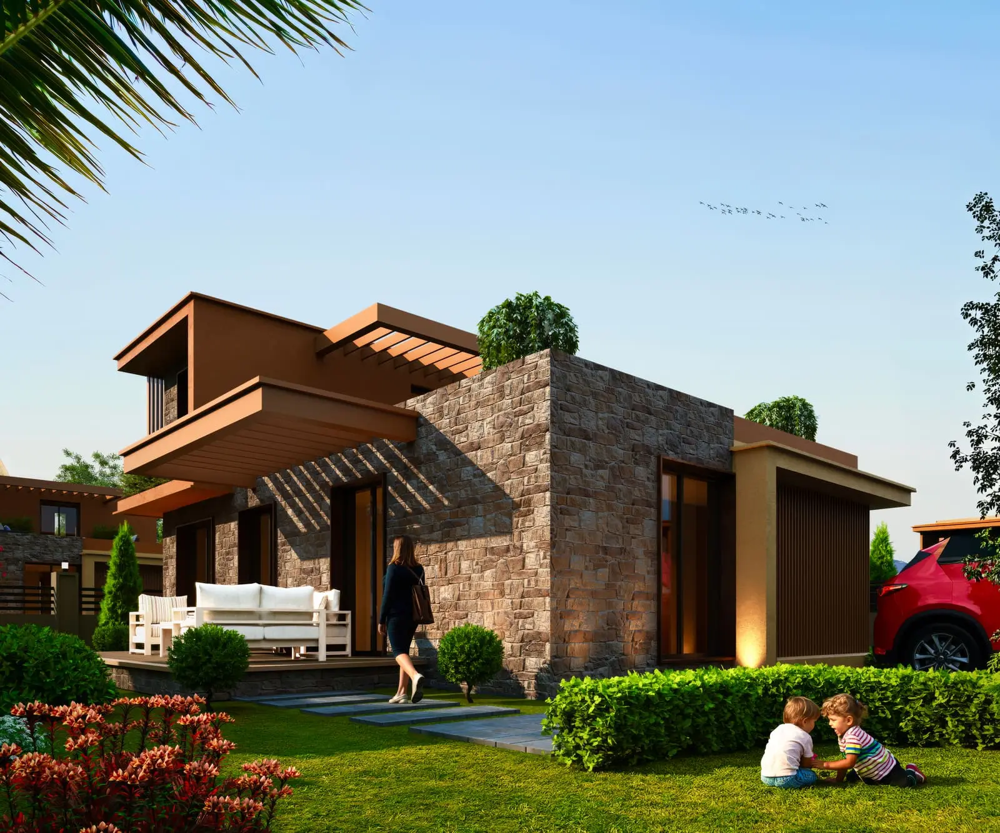
Her Ayrıntısı Özenle
Tasarlanmış bir yaşam.
Doğayla uyumlu mimarisi, seçkin detayları ve ayrıcalıklı konforuyla Casa Vera Oasis, size ve sevdiklerinize benzersiz bir yaşam sunuyor.
Assos · Kuzey Ege30 Özel Villa3+1 · 135 m²
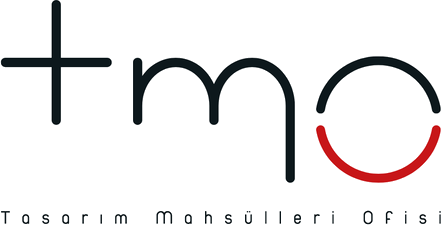
Projenin Mimarı
Deneyim, estetik ve sürdürülebilirlik.
2010 yılından bu yana TMO Mimarlık, mimariyi yalnızca yapı tasarlamak değil, değer üretmek olarak görüyor. Farklı ölçek ve fonksiyonlardaki projelerde estetik, işlevsellik ve sürdürülebilirliği aynı potada buluşturuyor.
Assos'un Eşsiz Doğasında
Kuzey Ege'nin özel ritmi.
Kaz Dağları'nın oksijen dolu havası ile Kuzey Ege'nin berrak denizinin buluştuğu Assos; korunmuş doğal yapısı, zeytinlikleri, berrak koyları ve sınırlı yapılaşmasıyla özgün karakterini koruyor.
Şehir hayatının temposundan uzak, ancak büyük şehirlere ulaşım sağlayan konumuyla huzuru, sadeliği ve kalıcı değeri bir arada sunuyor.
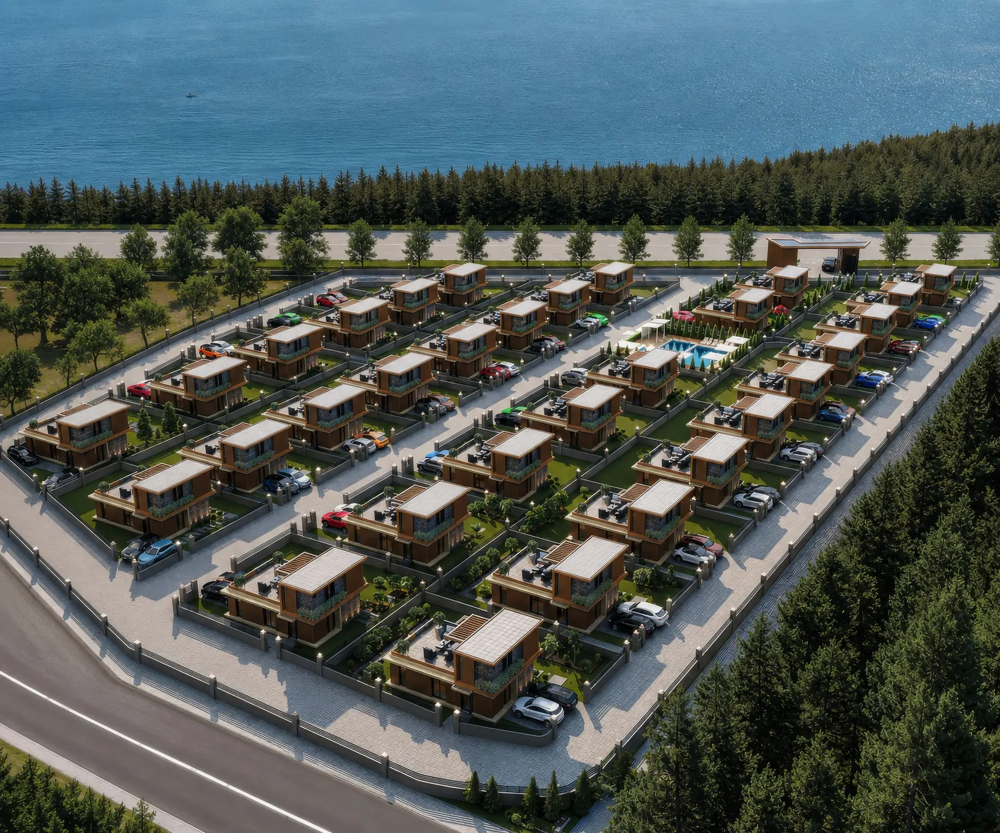
Doğanın koruduğu bir değer.
Casa Vera Oasis; Kuzey Ege'nin seçkin noktalarından birinde, denizin huzuru ile Kaz Dağları'nın atmosferinin buluştuğu özel bir konumda hayata geçirilen villa projesidir. 19.308 m² arazide yalnızca 30 villadan oluşur.
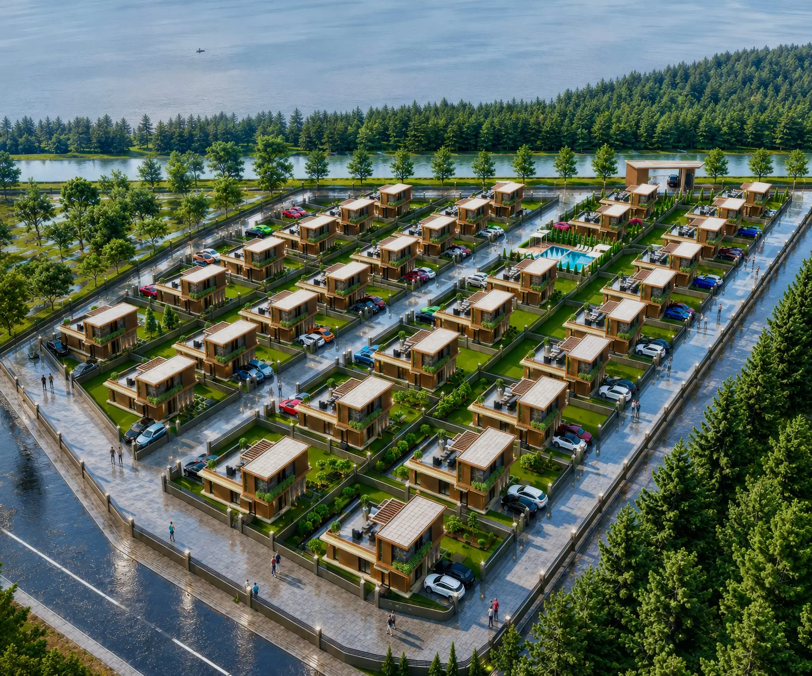
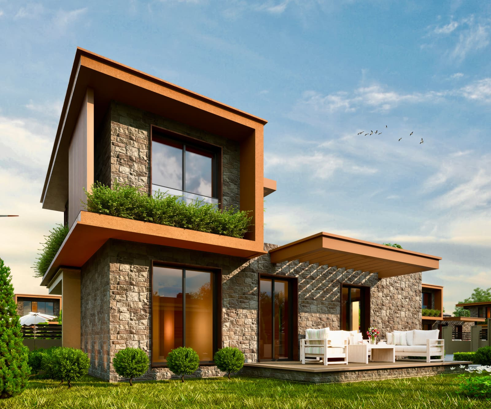
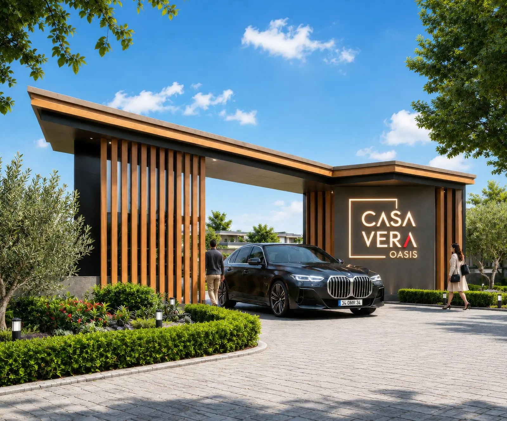
Villa özellikleri.
Yapı güvenliği, kullanım konforu, iklimlendirme, mahremiyet ve ortak yaşam olanakları tek bir bütün içinde ele alınıyor.
* Katalogda çelik konstrüksiyon iskelet sistemi, betonarme yapıya göre 4 kat daha dayanıklı olarak belirtilmektedir.
İçeride ve dışarıda aynı bütünlük.
Doğal taş, ahşap dokular, geniş açıklıklar ve çağdaş iç mekân dili; bahçe, teras ve yaşam alanlarını birbirine bağlıyor.
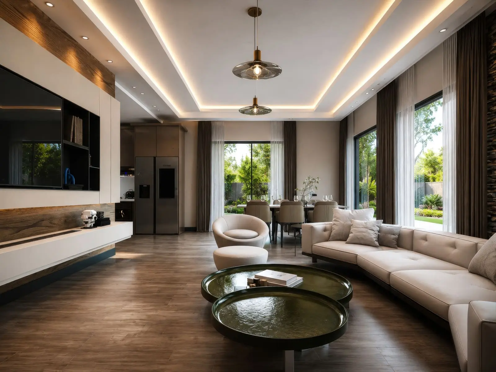
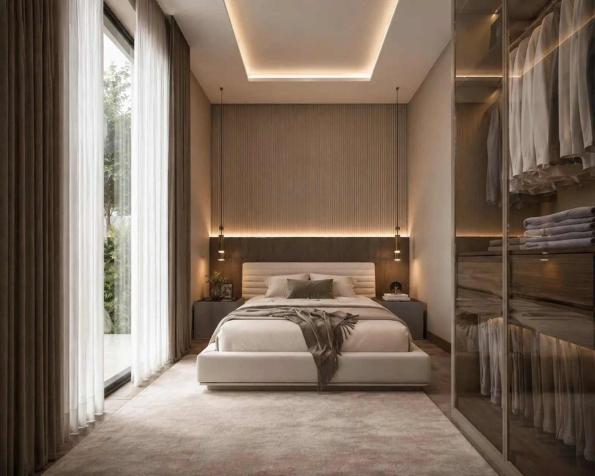
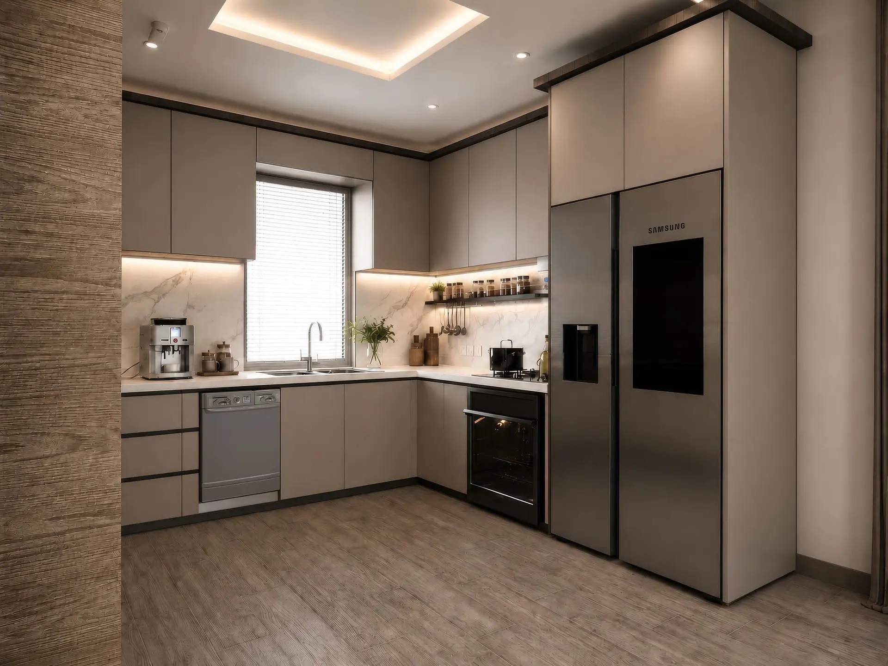
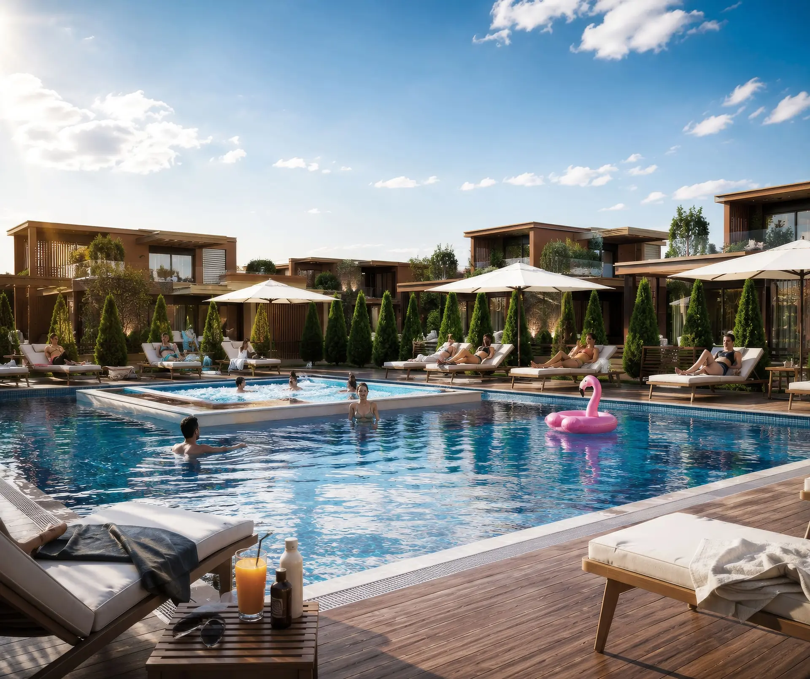
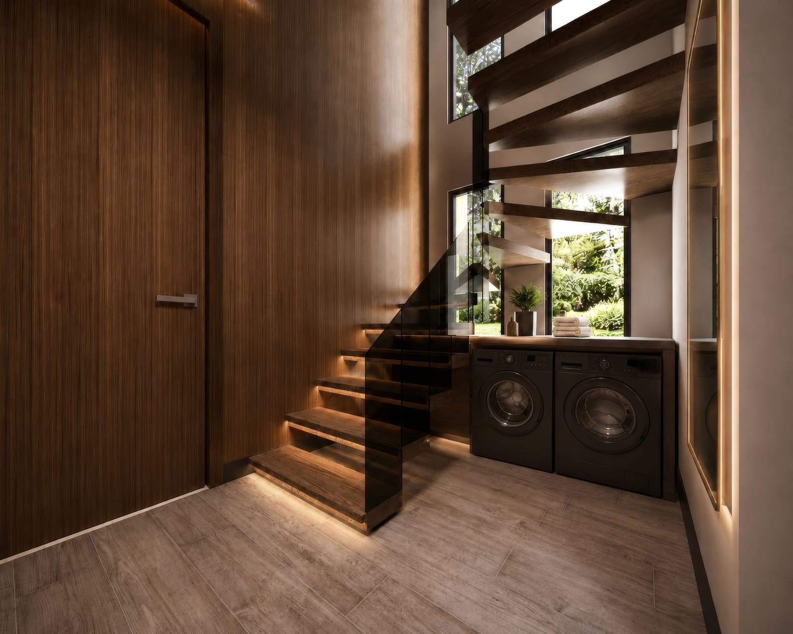
3+1 · 135 m²
Katalog planlarına göre zemin kat ve 1. kat toplam net kullanım alanı 135 m²; net arsa alanı 405-421 m² aralığındadır.
Zemin Kat Planı
81,79 m²1. Yatak Odası12,74 m²
2. Yatak Odası12,30 m²
Salon36 m²
Mutfak8 m²
Merdiven + Hol9 m²
WC3,75 m²
1. Kat Planı
53,21 m²3. Yatak Odası12,70 m²
Banyo & WC5,76 m²
Merdiven + Hol6,75 m²
Panoramik Açık Teras28 m²
135 m²Toplam Kullanım
405-421 m²Net Arsa Alanı
28 m²Açık Teras
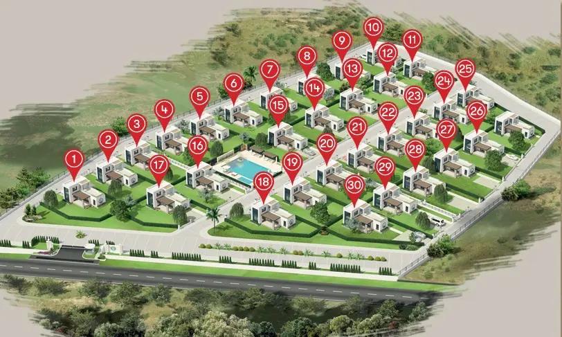
Konum ve Ulaşım
Assos'a yakın, doğanın içinde.
Kadırga Sahili, Assos Antik Kenti ve Çanakkale-Assos Yolu çevresindeki önemli ulaşım noktalarına erişim.
İstanbul550 km · yaklaşık 4,5 saat
İzmir240 km · yaklaşık 3 saat
Çanakkale Havalimanı75 km · yaklaşık 1 saat
Edremit Havalimanı65 km · yaklaşık 1 saat
1915 Çanakkale Köprüsü90 km · yaklaşık 1,5 saat
İzmir Otoyolu15 km · yaklaşık 10 dakika
Casa Vera Oasis'i yakından keşfedin.
Villalar, müsaitlik ve proje detayları için satış ekibiyle iletişime geçin.